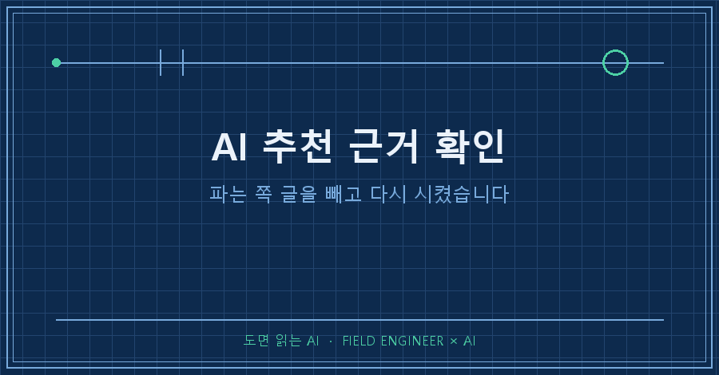
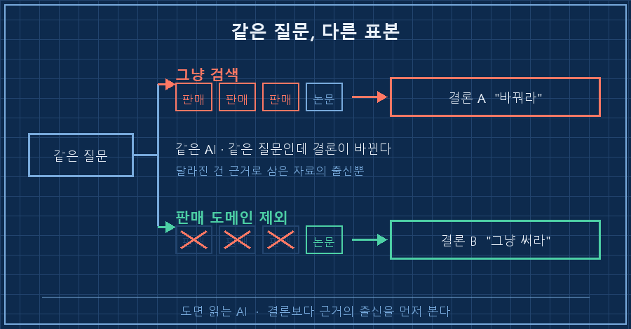
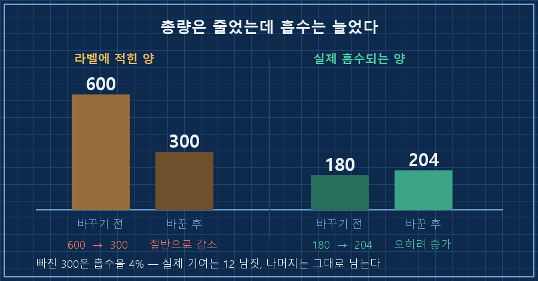
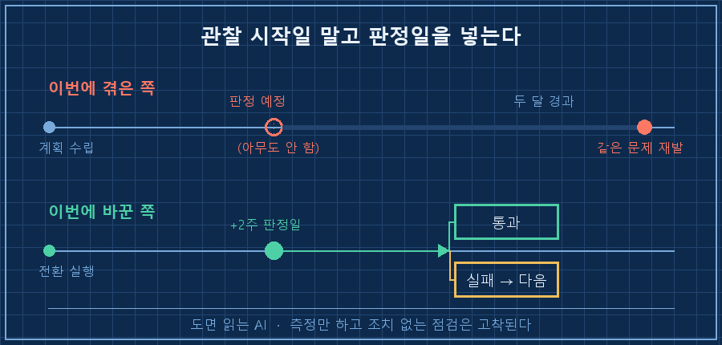

몇 달 쓰던 것들이 한꺼번에 바닥나서, 다시 사기 전에 AI한테 점검을 시켰어요.
답이 시원하게 왔습니다. "그건 더 좋은 형태로 바꾸세요." 근거까지 조목조목 붙어 있었고요.
그래서 AI 추천 근거 확인을 한번 해봤습니다. 링크를 하나씩 눌러봤더니, 죄다 그 물건을 파는 곳에서 쓴 글이더라고요.
먼저 결론부터 적을게요.
AI 추천 근거 확인은 "무슨 근거냐"보다 누가 쓴 근거냐를 먼저 봐야 합니다. 파는 쪽 글을 빼고 다시 검색시키는 한 줄이면 됩니다. 저는 그날 답이 통째로 뒤집히는 걸 봤어요. 바꾸라던 게 그냥 쓰라는 결론으로요.
2026년 9월 기준이고, 제 개인 기록 정리 얘기지 특정 제품·성분을 권하는 글이 아닙니다. 다만 AI한테 "이거 살까 말까"를 물어본 적이 있다면 품목이 뭐든 똑같이 걸리는 함정이에요.
설비 쪽 일을 십오 년 했습니다. 부품 고를 땐 홍보자료 말고 시험성적서를 보라고 후배들한테 잔소리하는 게 일이에요. 그래놓고 제 장바구니는 몇 년을 홍보자료로 채우고 있었네요..
1. 근거는 붙어 있었는데, 출신이 전부 한쪽이었어요
그날 점검한 항목은 다섯 개였고, 각각 웹으로 근거를 다시 확인시켰습니다. 그중 하나에서 AI가 이렇게 밀었어요. "나이 들면 상위 형태로 넘어가는 게 정석"이라고요.
논리 자체는 그럴듯했습니다. 흡수가 어떻고, 나이가 들면 전환 능력이 어떻고.
근데 근거로 붙은 주소들이 하나같이 낯익었어요. 좀 허탈했습니다..
"40대 넘으면 (상위 형태)" 논거의 출처가
대부분 판매사 블로그.제 기록에 그대로 남아 있는 문장이에요.
오해는 마세요. 파는 쪽 글이라고 다 틀린 건 아닙니다. 성분 설명은 오히려 그쪽이 제일 자세할 때도 많아요. 문제는 다른 데 있습니다. 한쪽 결론이 나야 매출이 생기는 사람들이 쓴 글이 검색 상단을 채우고 있으면, AI는 그 더미를 요약해서 결론을 냅니다. 거짓말을 한 게 아니라 표본이 기울어 있는 거예요.
현장에서도 자주 봅니다. 제조사 카탈로그만 열 장 쌓아놓고 신제품 회의를 하면 결론은 회의 시작 전에 이미 정해져 있어요. 카탈로그에 단점 적는 회사는 없으니까요.

2. "파는 곳은 빼고 다시" 한 줄로 답이 뒤집혔어요
그래서 지시를 한 줄 바꿨습니다. 쇼핑몰과 판매사 글은 근거에서 빼고, 논문 데이터베이스와 여러 연구를 모아 정리한 리뷰 논문만 보라고요.
같은 질문, 같은 AI였는데 돌아온 답이 이랬어요.
직접 비교 연구 4건 중 2건만 우위,
나머지 2건은 차이 없음 (참가자 21명 이하).
리뷰 결론: "형태 차이보다 개인차가 크다"숫자를 보고 나니 판단이 쉬워졌어요.
차이가 있다는 연구가 절반, 없다는 연구가 절반. 그것도 스무 명 남짓으로 본 결과입니다. 그런데 값은 두 배 넘게 비싸고 보관도 까다로워요.
결론을 유지로 바꿨고, 쓰던 걸 그대로 다시 샀습니다.
| | 1차 검색 (그냥 물어봄) | 2차 검색 (판매 도메인 제외) |
|---|---|---|
| 근거 출처 | 판매사 블로그 다수 | 논문·리뷰 논문 |
| 나온 답 | "상위 형태로 바꿔라" | "형태 차이보다 개인차" |
| 내 결정 | 교체 (지출 증가) | 유지 (지출 0) |
그날 기록에 저는 이렇게 적었어요. "판매 소스 배제 검색이 결정적이었음."
검색을 더 많이 한 게 아니라, 볼 자료를 좁혔더니 답이 달라진 겁니다.
3. 같은 방법을 다른 항목에도 돌려봤어요
이게 먹히니까 나머지 항목도 같은 식으로 훑었습니다. 그러다 하나가 더 걸렸어요.
이번엔 출처가 판매사가 아니라 진짜 연구였는데, 읽어보니 연구 대상이 저랑 달랐습니다.
근거는 인지 저하가 진행된 고령자 대상 연구.
내가 먹던 형태(식물 유래)는 근거가 더 약함.
인지 정상 성인에 대한 근거는 공백.
→ 재구매 중단이건 좀 뼈아팠어요. "이 성분 효과 있어?"라고 물으면 AI는 "있다"고 답합니다. 논문이 실제로 있으니까요. 근데 그 논문이 누구를 대상으로 한 건지는 묻지 않으면 안 나와요.
그래서 그 뒤로 질문을 바꿨습니다. "효과 있어?"가 아니라 "누구한테, 어떤 형태로 확인된 효과야?"로요.
기록에는 이렇게 한 줄로 남겼습니다.
"해롭지 않다"와 "돈 값을 한다"는 다른 판정이다.4. 숫자가 반으로 줄었는데 실제로는 늘었습니다
여기가 이번 정리에서 제일 재밌었던 부분이에요.
항목 하나를 다른 제품으로 갈아치웠더니 라벨 함량이 절반으로 떨어졌습니다. 600에서 300으로요. 보통 여기서 "어, 부족해지는 거 아냐?" 하고 되돌리잖아요. 그런데 계산을 시켜보니 정반대였어요.
| | 라벨에 적힌 양(명목) | 실제로 흡수되는 양(추정) |
|---|---|---|
| 바꾸기 전 | 600 | 약 180 |
| 바꾼 후 | 300 | 약 204 |
빠져나간 300이 흡수율 4%짜리였거든요. 실제로 몸에 들어가던 건 12 남짓이었고, 나머지는 장에 그대로 남아 애초에 제가 불편했던 원인이었습니다. 큰 숫자가 오히려 부작용원이었던 거죠.
그래서 요즘은 AI한테 계산을 시킬 때 실효 기준으로 다시 뽑으라고 붙입니다. 명목 총량으로 비교하면 성분표 예쁜 쪽이 무조건 이기거든요.

여기서 갈리는 질문 두 개
Q. 판매 사이트를 빼면 볼 자료가 너무 줄지 않나요?
줄어요. 그게 목적입니다. AI 추천 근거 확인을 1차 검색 대신 쓰라는 게 아니에요. 순서를 이렇게 둡니다. 일단 그냥 물어보고 → 결론이 "돈 더 쓰는 쪽"으로 나오면 → 그때 판매 도메인을 빼고 다시 시켜요. 지출이 걸린 답에만 한 번 더 거르는 겁니다. 다섯 항목 중 두 개가 여기서 뒤집혔어요.
Q. 그럼 논문만 믿으면 되나요?
그것도 아니더라고요. 이번에 뒤집힌 답의 근거도 참가자가 21명 이하였어요. 논문이라고 다 센 게 아니라 몇 명을 봤는지, 누구를 봤는지가 붙어야 근거가 됩니다. 그래서 저는 AI한테 결론만 받지 않고 "표본 수랑 대상도 같이 적어"를 늘 붙여요. 이 두 줄이 붙는 순간 판단은 제가 할 수 있게 됩니다.
그리고 하나 더, 판정일을 안 잡아서 두 달을 흘렸어요
이번 정리에서 제일 부끄러웠던 발견은 따로 있습니다.
기록을 뒤지다 보니 석 달 전 문서에 계획이 이미 잡혀 있었어요.
2주 관찰(~6/24) 후 나아지지 않으면 다음 단계로 전환그 2주는 지났는데, 판정을 아무도 안 했습니다. 저도 AI도요..
그래서 같은 불편을 두 달 더 안고 지냈고, 이번에 똑같은 얘기를 다시 꺼내고 나서야 "아, 1단계가 실패한 거네" 하고 알았어요.
관찰 기한을 잡는 것까지는 다들 합니다. 근데 판정일을 따로 안 박아두면 그 관찰은 그냥 묻힙니다. 측정만 하고 조치가 없는 점검은 아무 일도 안 한 것과 같더라고요.
그래서 이번엔 전환한 날짜에 2주를 더해서 일정을 걸었습니다. 관찰을 시작한 날이 아니라 판정하는 날로요.

제 AI 추천 근거 확인 순서는 결국 다섯 줄로 굳었습니다.
- AI가 낸 결론보다 그 결론을 만든 자료의 출신을 먼저 본다
- 지출이 늘어나는 답이 나오면 판매 도메인을 빼고 한 번 더 시킨다
- 효과 여부만 묻지 말고 "누구한테 확인된 효과냐"를 같이 시킨다
- 라벨 숫자 말고 실제로 쓸모 있는 양으로 다시 계산시킨다
- 관찰 기한을 잡았으면 판정하는 날을 일정에 박는다
다섯 항목을 이 순서로 훑었더니 두 개가 뒤집히고 한 개는 아예 안 사기로 했습니다. AI가 게을렀던 게 아니에요. 제가 "어디서 나온 얘기야?"를 안 물어봤을 뿐이었습니다!
여러분이 AI한테 마지막으로 뭔가 추천받았을 때, 그 근거를 쓴 사람은 그 물건을 파는 사람이었을까요 아니었을까요? 저는 이번에야 처음 눌러봤어요.
뒤집힌 판단만 따로 모아둔 칸이 makefield.ai에 있습니다.
태그: #AI추천근거확인 #AI출처편향 #AI정보신뢰 #AI검색광고글 #AI팩트체크 #AI에게물어보기 #AI리서치 #AI결과물검수 #AI할루시네이션 #AI에게일시키기 #AI활용법 #AI실무활용 #교차검증 #개인AI에이전트 #도면읽는AI